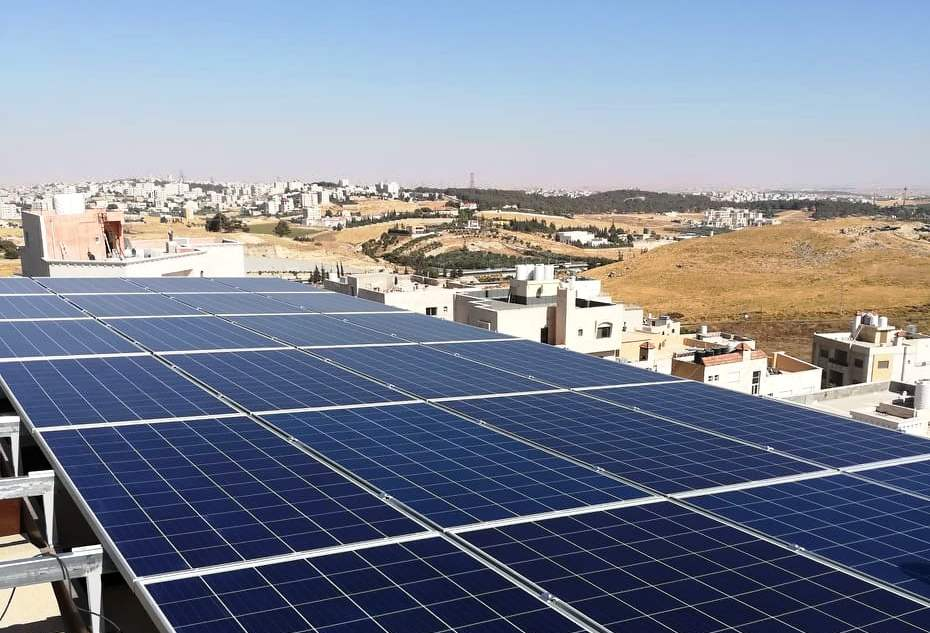
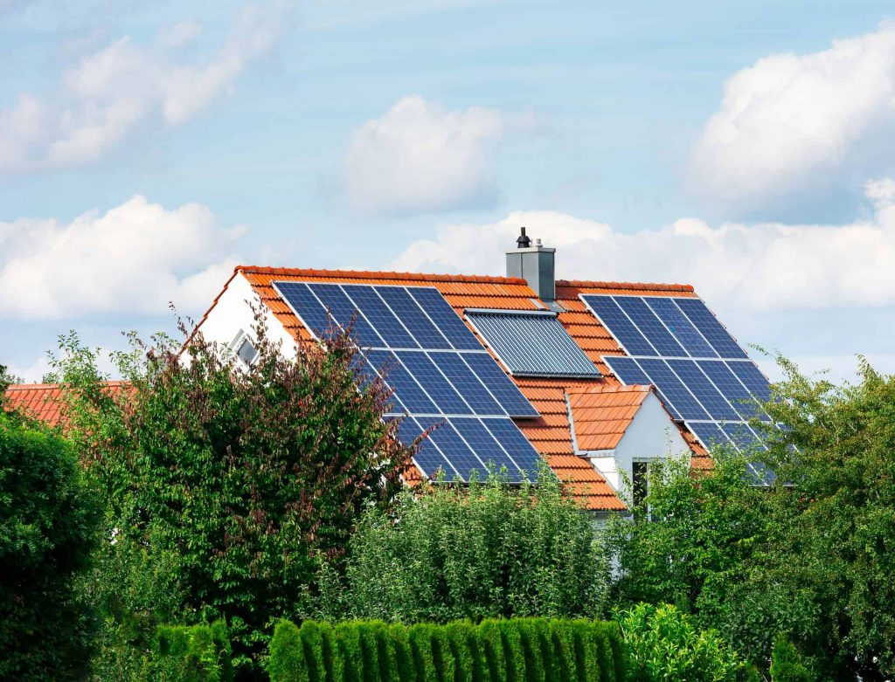
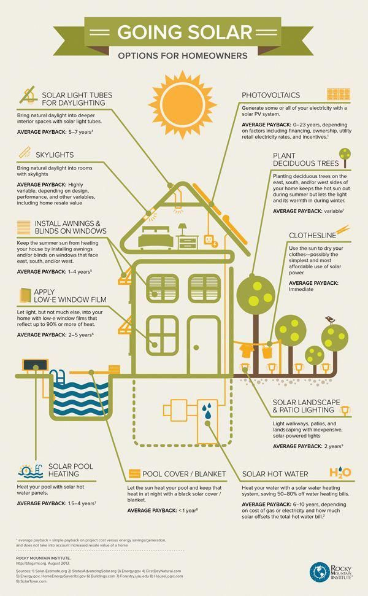
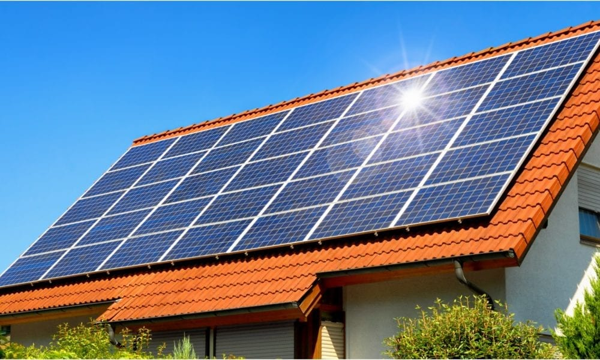
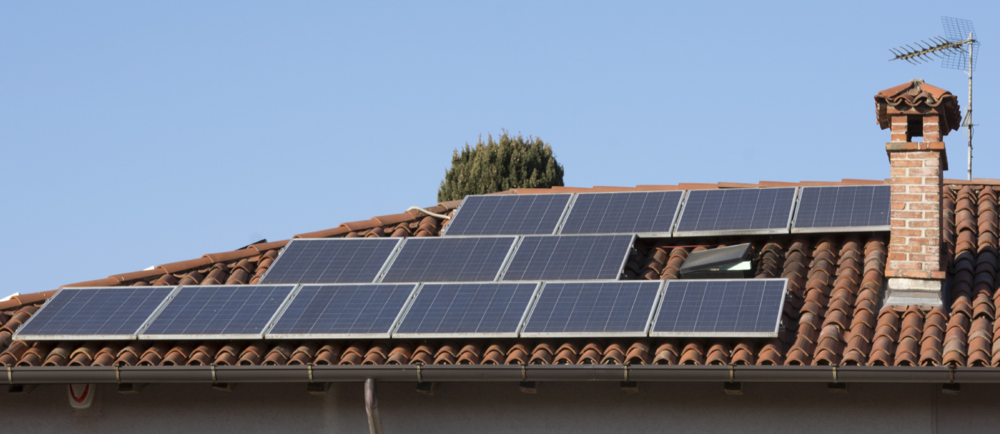
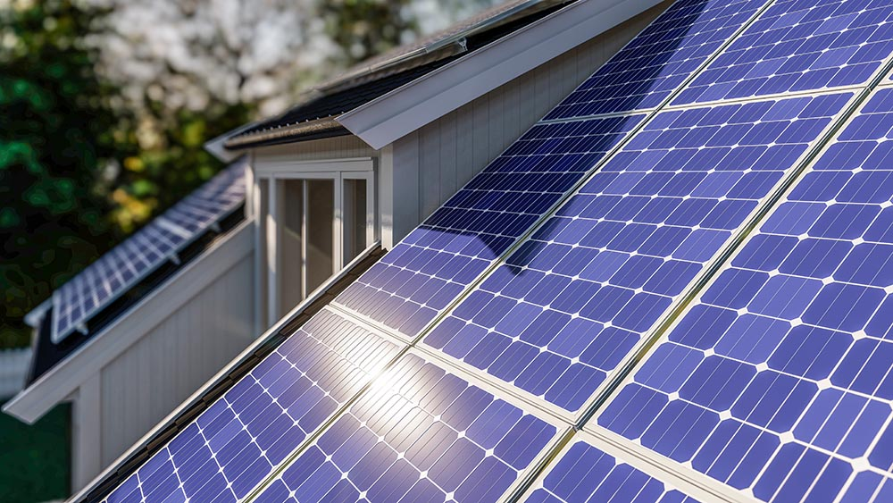

5 Things You Need to Know Before Installing Solar Panels

Things to Consider before Installing Solar Panels on ...

7 Things to Know Before Installing Solar Panels on Your Roof ...

5 Things to Consider Before Installing Solar Panels – Random Useful ....

Things to Consider Before Installing Rooftop Solar Panels ...

8 Things to Consider Before Adding a Puerto Rico ...

7 Things to Know Before Installing Solar Panels ...

Things you should know before installing solar panels Technonguide

8 Things to Consider while Installing Solar Panels on a Roof ...

7 Things to Consider Before Installing Rooftop Solar Panels ...
- 
5 things you need to know before installing Solar panels on ...
- 
Things to Consider Before Installing Solar Panels - Powerlec
- 
Things to Consider Before Installing a Residential Solar ...
- 
Things To Consider Before Buying Rooftop Solar Panels For Your ...
- 
Things to Know Before Installing Solar Panels on Your Home
- 
9 Things to Consider Before Installing Solar Panels